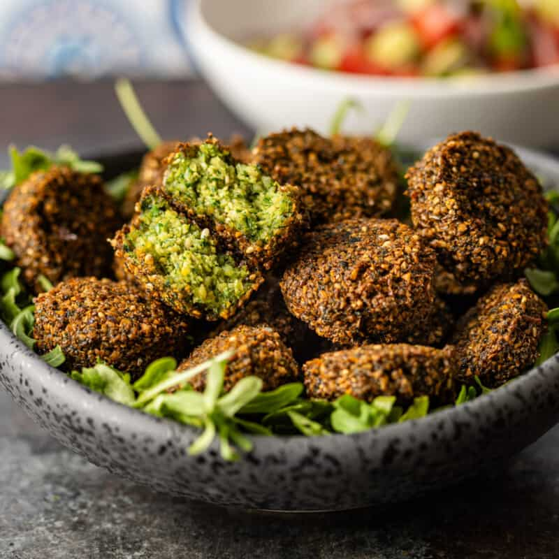
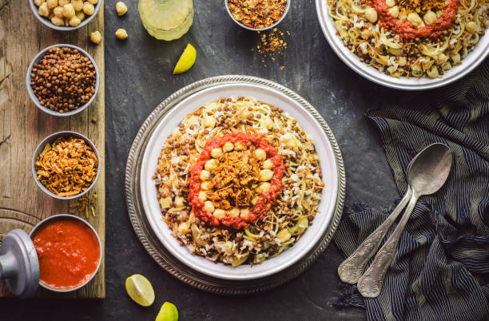

Traditional Egyptian Food
Ful Medames (فول مدمس)

Ful Medames is a traditional Egyptian dish made from cooked fava beans. It is usually eaten for breakfast and served with olive oil, lemon juice, and spices. Sometimes it comes with tomatoes, onions, or boiled eggs. Egyptians love ful because it is healthy, filling, and full of flavor!
Taameya (طعميّة)
Taameya is the Egyptian version of falafel. It is made from mashed fava beans mixed with herbs and spices, then fried until crispy. People usually eat it for breakfast with bread, salad, and tahini sauce. Taameya is crunchy on the outside and soft on the inside — and it’s a favorite food for many Egyptians!
Koshari (كشري)
Koshari is one of the most famous and loved street foods in Egypt. It is made with layers of rice, pasta, lentils, and chickpeas, all topped with spicy tomato sauce and crispy fried onions. Sometimes people add garlic vinegar or hot chili sauce for extra flavor. Koshari is a filling and tasty meal that many Egyptians enjoy — especially for lunch or dinner!